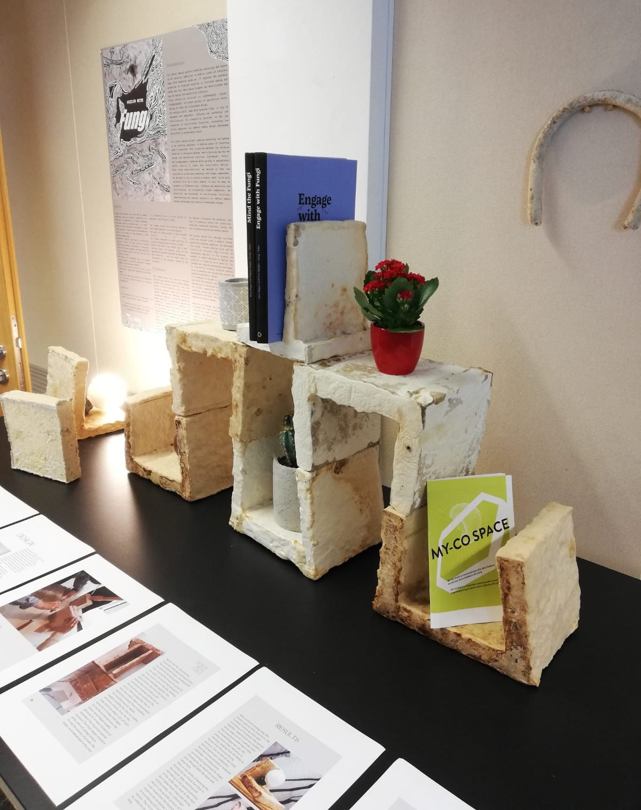
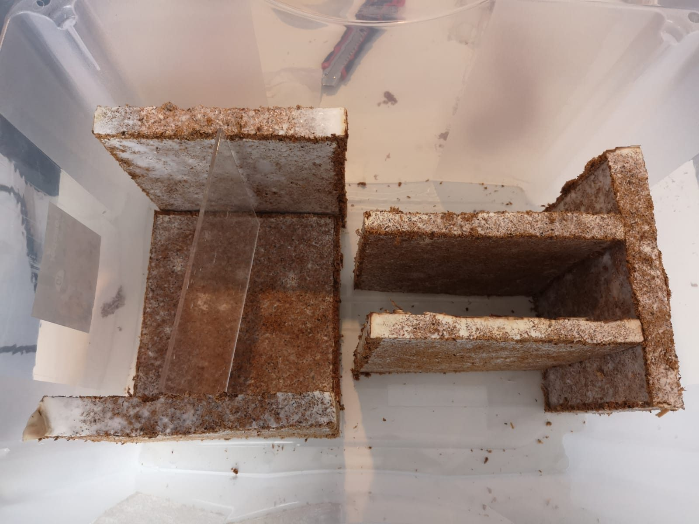
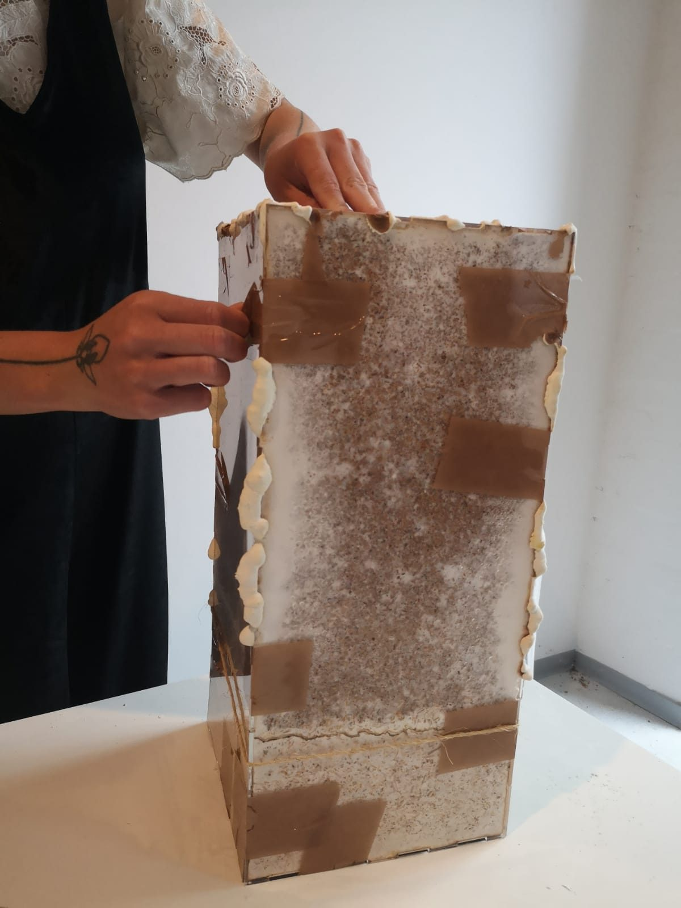
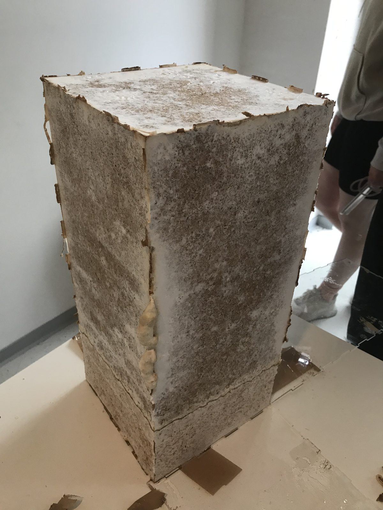
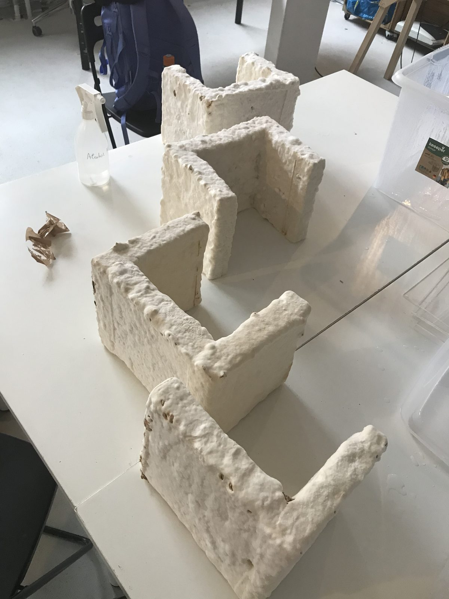
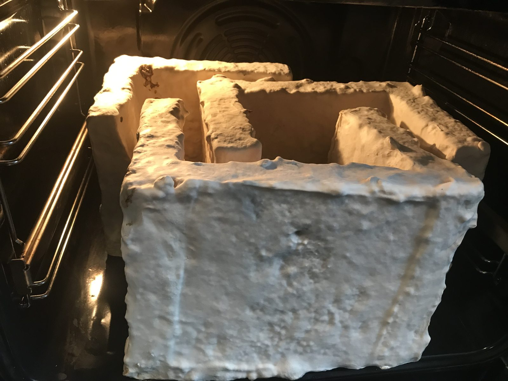
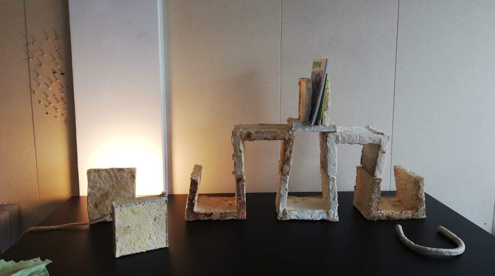
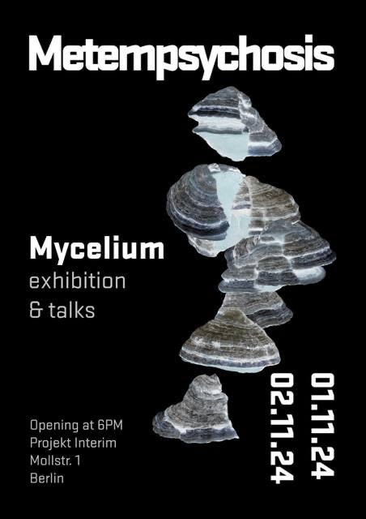

Introduction
This design project combines technology and nature: a modular piece of furniture made from mushroom mycelium. It explores the potential of mycelium in furniture making and how this biomass could change the way we design and manufacture furniture.
The material is lightweight, robust and biodegradable, and it grows quickly on agricultural waste, which makes it ideal for sustainable design. Our modular shelf, made from mycelium tiles, is easy to assemble and adaptable, and offers new aesthetics and functionality.

Process
To learn how fungal composites work as modular parts for furniture, we used a crash-course approach, where the essential know-how was given at the right moment. We grew the fungal material in TOP Lab’s DIY lab, used HTW Berlin’s classrooms as a co-working space for the design work, and built negative moulds for the growth process in the Makerspace.




The growing process was provided by Alessandro Volpato and is open source: the fabrication details are available to everyone. So get started yourself if you like to watch things grow!

Result
After enough drying time, the shapes took on their final form. We made five shelving units, each of modular tiles grown together in a U-shape, plus a lamp made of two tiles with a kombucha-leather shade, and a platform shelf of three tiles for books and magazines. Every piece varies slightly in colour, from off-white to brown, because of the oven-drying process.

Discussion
Everything was developed through an experimental approach, adapting our design decisions to explore mycelium as a material for everyday use. We ran into challenges with cultivation and drying, adapted our approach, and ended up with flexible modular tiles.
Working with a growing biomaterial means staying open to change, and letting the material and its ever-changing results inform the design.
The project shows the potential of combining nature and technology, and how mushroom mycelium and modular design can inspire more sustainable practices.
Exhibition
The pieces were shown at Metempsychosis, a mycelium exhibition with talks in Berlin, 1–2 November 2024.
